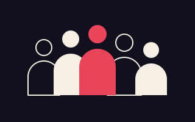
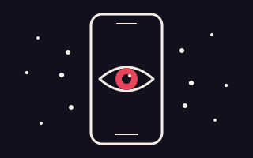
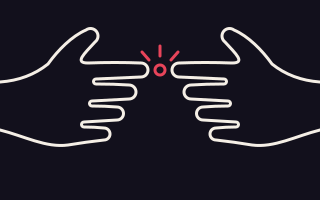

¿Cómo circula el afecto de pareja cuando lo miramos en una pantalla?
Exploramos las narrativas de pareja que circulan en Instagram y TikTok entre estudiantes universitarios en Pereira. Aquí reunimos lo que encontramos al preguntar a 136 estudiantes y al leer 160 videos de pareja con mucha interacción.
Por dónde empezar
Recorre las secciones del proyecto para conocer al equipo, la metodología, los hallazgos y las formas de participar.
-

Quiénes somos
Conoce al equipo de docentes, estudiantes y graduada de psicología que impulsa este estudio.
-

Qué hacemos
Revisa qué nos preguntamos, cómo lo estudiamos y qué cuidados éticos tenemos.
-
Resultados
Explora qué encontramos en la encuesta y en los videos, y qué se desprende de ambos.
-

Participa
Déjanos tu contacto si quieres recibir los resultados o enterarte de futuras actividades.
-
Contacto
Escríbenos para resolver dudas sobre la investigación o proponer un diálogo.
Lo que encontramos, en una mirada
-
160
Videos de pareja con mucha interacción leídos y codificados: 73 de TikTok y 87 de Instagram
-
63,9 %
De los 136 estudiantes que respondieron dedica 30 minutos o menos al día a ver contenido de pareja, sobre todo para entretenerse
-
71 %
De los videos (114 de 160) llevan alguna marca de la plataforma: un formato prestado, un muro de hashtags o un llamado a comentar